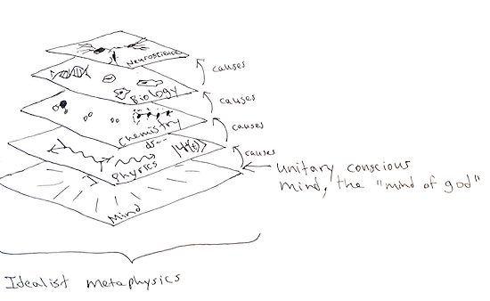

There's an idea I've been thinking about for almost a year now, it's a way of thinking about metaphysics the way software engineers think about abstraction. Software is usually organized into layers, and the whole thing is called a stack. For philosophical topics like metaphysics, it's easy to get lost in a word salad, so I wanted to make a more accessible introduction to metaphysics and ontology, because it actually has implications for the possibility of life after death.
The metaphysics that I suspect most scientifically minded people assume is called materialism. The stack looks like this: materialist.png79 KB The bottom layer is always the "most real", in the sense that the layers above it can be reduced to the lower layers. So physics is the most real, with fundamental particles and spacetime being the primitive ingredients of a materialist reality. Atoms are built out of fundamental particles, then molecules built out of atoms. Next, molecules that self-replicate and fabricate proteins form biology, then biology gives rise to nerves and neurons. And finally, somehow those nervous systems become conscious. This last step is the "and then a miracle occurs" step. miracle.jpg90.4 KB This is the major problem within materialism, it has to reconcile the self-evident reality of subjective experience with the fact that no one has any idea how brain activity could produce a subjective experience. All the other steps between layers are well-understood and can be explained in detail. But consciousness is just a mystery that has to be hand-waved away, or denied entirely. This is what David Chalmers calls the Hard Problem of Consciousness.
Bernardo Kastrup has more to say about materialism in his short, accessible book, Why Materialism is Baloney, but I wanted to get to an alternative stack first, it's not called materialism, it's called idealism.

idealist.png87 KB
In Idealism, the base layer is mind. Not your mind, but a singular conscious mind, that simply exists. The explanation for multiple minds is that it can undergo a dissociative process similar to multiple personality disorder. In this way, it can form little localized minds that have a point of view, exist in spacetime for a while to learn things that only a time-bound mortal can learn, and then eventually expire and merge back with the whole.
The rest of the stack can be "ported" to run on the mind layer, because it's written in mathematics. The Standard Model uses group theory and general relativity uses differential geometry. Mathematics can be done by minds, so it's conceivable that physical reality could be running on that base mental layer.
Okay, what does this mean for life after death? In materialism, when the brain dies, your mind dies. And that's it, you simply stop having a subjective experience forever. In idealism, when the brain dies, there should be an experience of leaving the body and going somewhere else. In DID, the alters can integrate and merge, and their formerly separate memories become accessible to the host again. In idealism, dying would be closer to this, with your memories integrating into the whole, and you remembering that you were always that singular conscious mind, all minds are.
If you assume an idealist metaphysics, then it's conceivable that near-death experiences, religious experiences, out-of-body experiences, apparitions, UFOs, psychic phenomena, precognition, etc. the things that skeptics call "woo woo", all might be real phenomena. The success of the hard sciences depends on repeatable laboratory experiments. It selects for phenomena that are accessible and reproducible in a lab. This laboratory environment might simply filter out these kinds of anomalous things that many people experience. Calling an apparition "mental" might be both true, and also not dismissing it's actual reality. The metaphysics you assume matters.Â